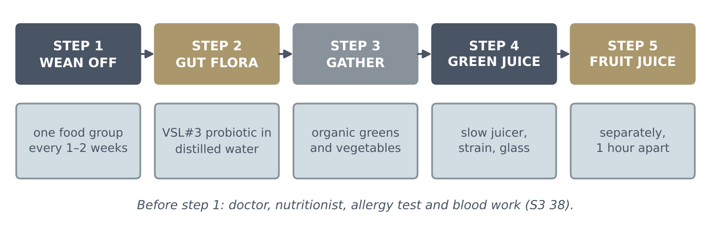
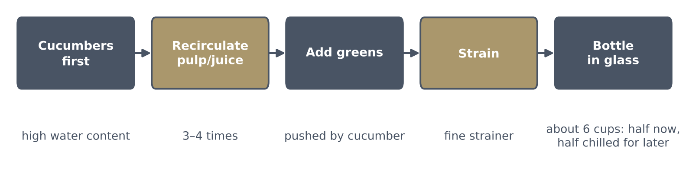

The Step-by-Step Detox and Juicing Guide
The practical companion to Season 3, Section 38 (the detox talk): weaning off heavy foods, restoring the gut, what goes into the green juice, how to juice it, and the fruit juice that is always made separately (a written guide, not a talk)

The five steps
Step 1: Wean off heavy and toxic foods gradually
Before starting a full detox, you need to wean your body off processed and heavy foods to prevent shock and minimize detoxification side effects (such as rashes).
Timeline: wean off items over a period of 1 to 2 weeks per food category.
What to eliminate:
• Processed foods, artificial chemicals, and GMOs.
• Starches and bread.
• Meat and fish.
• Dairy products and cheese (which irritate the gut flora and are toxic during a cleanse).
Step 2: Restore the gut flora (if you've taken antibiotics)
If you have taken antibiotics, your gut flora and protective stomach lining will be compromised, leading to inflammation.
Select the right probiotic: use VSL#3 in powder form, purchased from the refrigerator section (not over-the-counter).
Timing: take it at least 2.5 hours after taking antibiotics so the medication does not kill the beneficial bacteria.
Preparation:
- Pour about half a cup of distilled water into a glass (always use clean distilled water, as regular tap water chemicals can interfere with live bacteria).
- Pour the VSL#3 powder into the water and stir thoroughly.
- Drink 2 to 3 times a day if you are actively experiencing gastrointestinal pain or toxicity, or once daily for maintenance.
Step 3: Gather organic ingredients
Prepare your daily supply of fresh vegetables using a masticating juicer (such as the Omega 3000, which extracts more juice than shredders).
| Greens & veggies | Amount |
|---|---|
| Swiss chard (green or red) | not given |
| Green kale or dinosaur kale | not given |
| Collard greens (organic) | not given |
| Broccoli | not given |
| Bok choy | about 2 large leaves |
| Carrots | 4 to 5 |
| Zucchini (green or yellow) | 1 |
| Cucumbers (organic or GMO-free, peeled if needed) | 2 |
| Spinach (to add a smooth texture) | about 2 handfuls |
Supplements & water:
• Raw powder capsules (pure chlorella and spirulina, e.g., taking about 10 capsules).
• Pure distilled water (due to its negative charge helping pull out chemicals).
Step 4: Make the green juice
- Chop everything into small pieces so the juicer processes the vegetables smoothly without burning out.
- Start with the cucumbers: put cucumbers through the juicer first because of their high water content.
- Recirculate the pulp/juice: as the juice extracts, take the extracted liquid/moisture and run it back through the juicer 3 to 4 times to extract all available water and nutrients.
- Add greens progressively: feed in the bok choy, spinach, kale, collard greens, and broccoli while using the cucumber content to push everything through.
- Strain the final juice: because masticating juicers leave tiny vegetable particles, pour the finished green juice through a fine strainer to remove excess pulp.
- Storage: this process yields about 6 cups of green juice. Pour it into glass bottles: drink half and store the rest in the refrigerator for later in the day.

From her detox talk (S3 38.2), not this guide: start with no more than one cup, finished within about ten minutes, on a day off near a bathroom; get used to the bitterness; fresh, not powder.
Step 5: Make the fruit juice separately
Never mix fruits and vegetables together: fruits ferment faster than greens; combining them causes nutrient loss and gas.
Timing: if you drink both, wait at least 1 hour between finishing your green juice and consuming fruit juice.
Fruit juice recipe:
- Take 1 to 2 cups of frozen organic berry blend from the freezer.
- Dice 4 organic apples.
- Blend the berries and apples together (add a small splash of distilled water if the mixture is too thick) to yield your daily fruit juice.
The method — One Day of the Guide
- On your current weaning step: 1 to 2 weeks per food category (Step 1).
- VSL#3 in distilled water, at least 2.5 hours after any antibiotic (Step 2).
- Juice the greens: cucumbers first, recirculate 3 to 4 times, add greens, strain, glass bottles (Step 4).
- Drink half; store the rest in the refrigerator for later in the day.
- Wait at least 1 hour, then have the fruit juice (Step 5).
Questions answered
This is a written guide, not a talk, so there were no audience questions. Her answers on juicing, shakes, the elimination diet and the gut are in S3 38.
Her guide is given here in her own words. Only the grey "Added safety note" boxes, the blue boxes (from her detox talk and her books) and the italic line from her detox talk are not from this guide; the table says "not given" where she gives no amount.